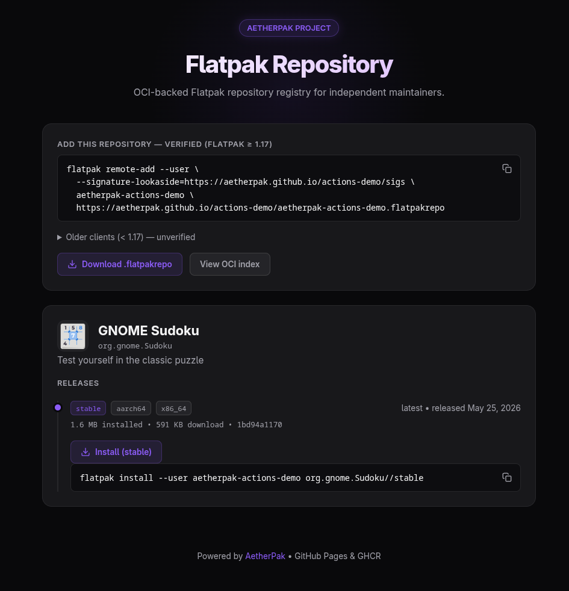

What it is
A static-HTTP OSTree repository serves an app as many small objects, so clients make hundreds of requests. That is slow, and it trips GitHub Pages rate limits. AetherPak uses Flatpak's native OCI support instead:
- Application layers (blobs) live in GHCR as OCI images.
- A small JSON index and a landing page are served from GitHub Pages.
- Clients read the index from Pages and pull layers from GHCR in large chunks.
What your users get
Every repository gets a landing page like this, with a one-click .flatpakref install button and copy-paste commands for each app and channel.

A live page AetherPak deploys — captured from the actions-demo repository. See also the multi-app demo.
Usage
Enable GitHub Pages & public packages
Turn on Pages, and make the published GHCR package public so anyone can install without authenticating (). Organization repos must allow public packages first.
Add a signing key (optional)
Generate a GPG key and store it as your repo's AETHERPAK_GPG_KEY secret (). With signing: auto (the default) the workflow signs every image once the key is present, publishing the signature and public key beside the index so clients verify on install. With no key set, nothing changes.
Add the workflow
Pick the shape that matches your repository: one Flatpak per repo, or several Flatpaks declared in aetherpak.yaml.
Create .github/workflows/publish.yml. It builds from your manifest for x86_64 and aarch64 and deploys to Pages.
name: Publish Flatpak
on: { push: { branches: [main] } }
permissions:
contents: read
packages: write
pages: write
id-token: write
jobs:
publish:
uses: aetherpak/actions/.github/workflows/publish.yml@v3
with:
manifest-path: org.example.App.json
secrets:
gpg-private-key: ${{ secrets.AETHERPAK_GPG_KEY }} # signs when the key is setPin to a specific commit for reproducible builds:
uses: aetherpak/actions/.github/workflows/publish.yml@__COMMIT_SHA__Add aetherpak.yaml at the repo root, listing every Flatpak you publish (). Each entry is either a Flatpak manifest checked into the repo (often via submodule) or a prebuilt .flatpak bundle imported from an upstream release.
Add .github/workflows/publish.yml. It plans the matrix from aetherpak.yaml, rebuilds only the apps that changed since the previous push, and deploys one combined site.
name: Publish Flatpak Repository
on:
push: { branches: [main] }
schedule:
- cron: "0 6 * * 0" # weekly full rebuild so runtime image updates land
workflow_dispatch:
inputs:
app: { type: string, default: "" }
force-all: { type: boolean, default: false }
permissions:
contents: read
packages: write
pages: write
id-token: write
jobs:
publish:
uses: aetherpak/actions/.github/workflows/publish.yml@v3
with:
config: aetherpak.yaml
app: ${{ inputs.app }}
force-all: ${{ inputs.force-all }}
secrets:
gpg-private-key: ${{ secrets.AETHERPAK_GPG_KEY }}See Configuration → Config file below for the full schema and a worked example.
Configuration
manifest-pathSingle-app mode: the Flatpak manifest to build.configMulti-app mode: path to aetherpak.yaml. Default aetherpak.yaml.archesSingle-app: architectures to build. Default x86_64 aarch64.branchSingle-app: Flatpak branch (channel). stable on tags, beta on the default branch, else the ref name.run-linterSingle-app: run flatpak-builder-lint. Default true.cacheSingle-app: cache flatpak runtimes and builder files. Default true.builder-argsSingle-app: extra flatpak-builder flags, one per line. Default --install-deps-from=flathub.appMulti-app: rebuild only this app id (skip change detection).force-allMulti-app: rebuild every app. Default false.base-shaMulti-app: commit to diff against for change detection. Defaults to github.event.before.workflow-pathMulti-app: caller workflow path; touching it triggers a rebuild-all.signingGPG-sign images: auto (sign when a key is set), gpg, or off. Default auto.registryOCI registry host. Default ghcr.io.oci-repositoryImage repository path. Defaults to this repository.remote-nameFlatpak remote name and .flatpakrepo filename. Defaults to the repo slug.pages-urlPublic URL of the index. Defaults to the project's Pages URL.runtime-repoRuntimeRepo in each one-click .flatpakref. Defaults to Flathub; empty omits it.landing-pageWrite the static index.html. Set false to render your own page.index-templatePath to a custom HTML index template. Overrides branding.index_template.deployDeploy to Pages. Set false to host the site yourself.artifact-nameSite artifact name when deploy: false. Default aetherpak-site.submodulesSubmodule fetch mode for the build checkout. Default recursive.concurrency-groupOverride the per-repository publish lock. Only for repos publishing several independent sites.reconcile-onlySkip build and push; only reconcile the index against the registry and re-deploy. Use after deleting an image.cli-versionaetherpak CLI release / container image tag. Default v0.10.0.aetherpak.yaml dict changes (sha256 bumps, arch additions, runtime updates). force-all or app override it.Set pages-url to your domain (also set it under Settings, then Pages):
with:
pages-url: https://flatpak.example.comBlobs go to GHCR by default. Set oci-repository for a different image path within GHCR, or pass registry with a registry-token secret to push to another host:
with:
registry: registry.example.com
oci-repository: my-org/my-flatpaks
pages-url: https://flatpak.example.com
secrets:
registry-token: ${{ secrets.REGISTRY_TOKEN }}
gpg-private-key: ${{ secrets.AETHERPAK_GPG_KEY }}The index points clients at this registry for the blobs. For a local or HTTP registry, use the publish action with insecure-registry: true (see Bring your build).
Build with any toolchain (a manifest, Rust/Tauri, a script). Produce an OSTree repo or a .flatpak bundle, then publish it. publish resolves the app id, arch, and branch from the repo.
name: Publish Flatpak
on: { push: { branches: [main] } }
permissions:
contents: read
packages: write
pages: write
id-token: write
jobs:
publish:
runs-on: ubuntu-latest
environment:
name: github-pages
url: ${{ steps.deploy.outputs.page_url }}
steps:
- uses: actions/checkout@v6
# Build your app here, producing an OSTree repo (or a .flatpak bundle).
- uses: aetherpak/actions/publish@v3
with:
repo-path: _repo # or: bundle-path: app.flatpak
pages-url: https://${{ github.repository_owner }}.github.io/${{ github.event.repository.name }}
- id: deploy
uses: actions/deploy-pages@v5idReverse-DNS app id. Required. Must match the manifest's app-id.branchFlatpak channel. Default stable. Load-bearing for both source kinds.manifestPath to a Flatpak manifest. Mutually exclusive with bundles.runtimethe app's runtime (gnome-50, freedesktop-24.08, …). Required when manifest is set.archesArchitectures to build. Default [x86_64]. Manifest entries only.run-linterRun flatpak-builder-lint. Default false. Manifest entries only.bundlesMap of arch to { url, sha256 }. Mutually exclusive with manifest.brandingTop-level landing-page branding: logo_url, favicon_url, accent_color, footer_text, and index_template (path to a custom HTML template).aetherpak.yaml at the repo root declares every app in a multi-app repository; pass it with config: aetherpak.yaml. Each entry is a Flatpak manifest checked into the repo (often via submodule) or a prebuilt .flatpak bundle imported from an upstream release.apps:
- id: org.example.App
manifest: apps/org.example.App/manifest.yaml
runtime: gnome-50
arches: [x86_64, aarch64]
branch: stable
- id: com.example.Other
branch: stable
bundles:
x86_64:
url: https://github.com/upstream/Other/releases/download/v1.0.0/Other_x86_64.flatpak
sha256: 2159fc643175dcf54f8b9293f48fb8b11577fa0ea5514c2af622ff922d349a4a
aarch64:
url: https://github.com/upstream/Other/releases/download/v1.0.0/Other_aarch64.flatpak
sha256: a74e9855d8a66eaa03f9beff3c42b4973eb4ac91ed81f81db49da4599080960d